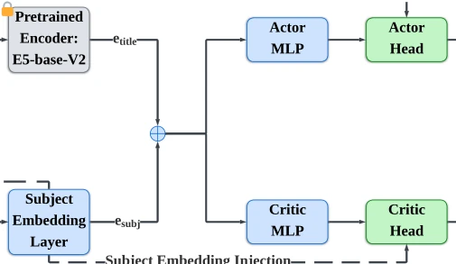
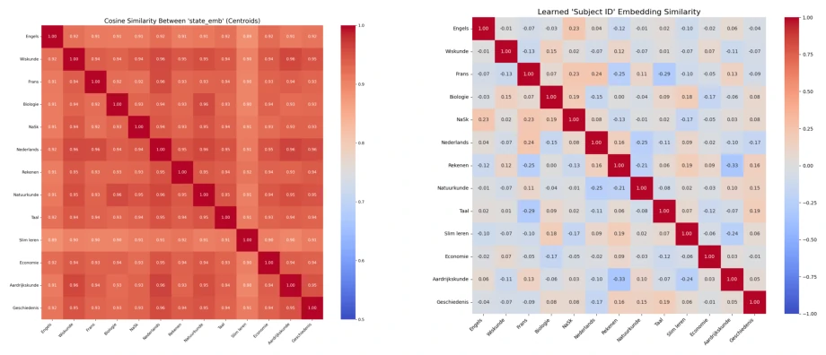
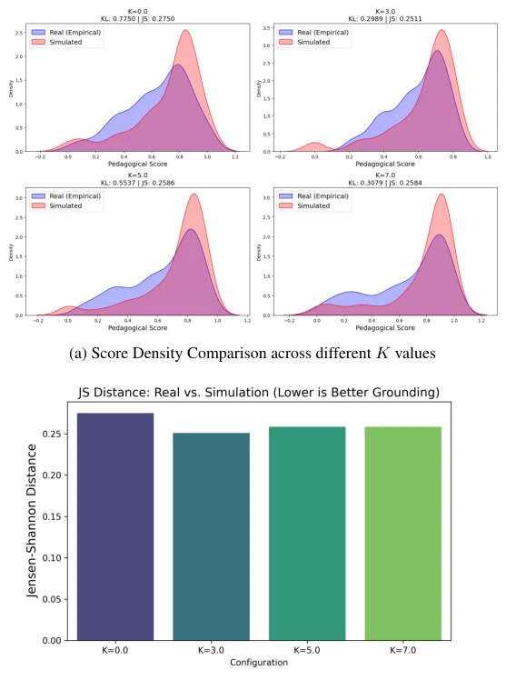
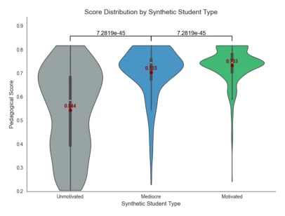
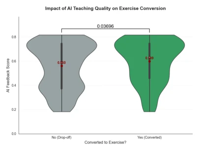
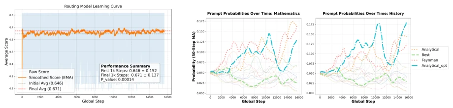
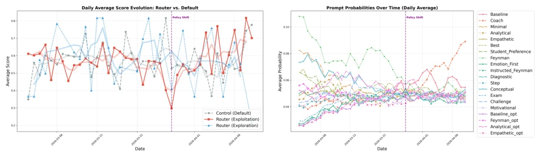
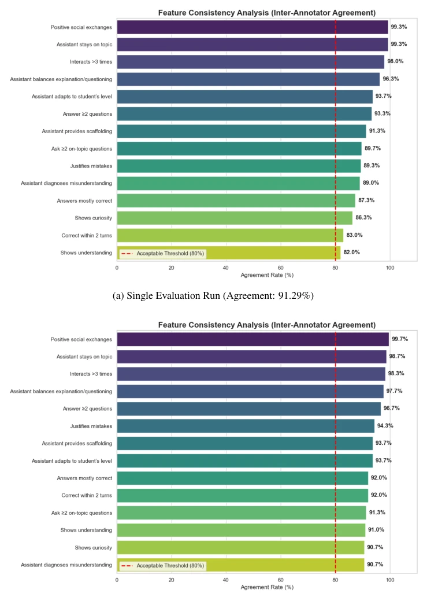
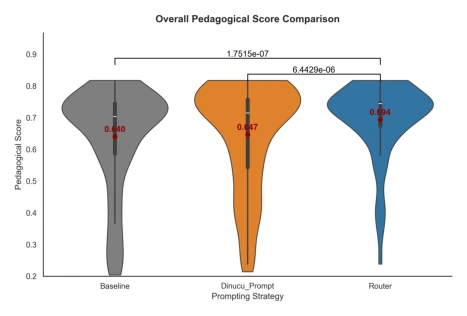
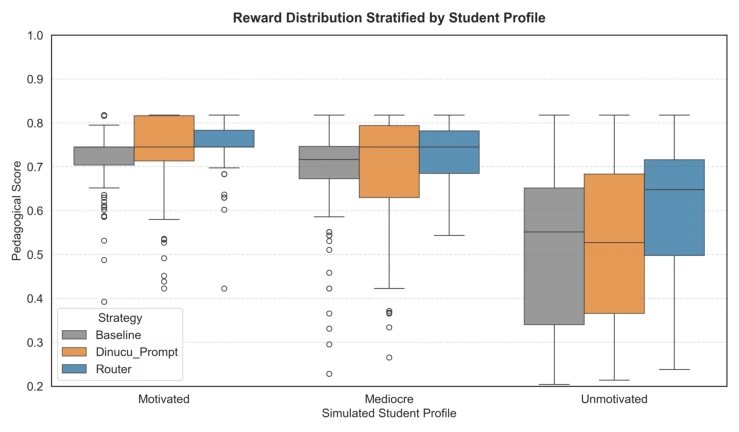

This paper poured cold water on the LLM education community. Although claimed to be "adaptive", it is essentially Prompt routing, attempting to use reinforcement learning to solve teaching strategy selection. It performed well in simulation, but once facing real humans, the greedy strategy collapsed, requiring stochastic sampling (stochastic router) to improve conversion rates, which is simply a classic failure scenario in the RL field. Most ironically, the 14 evaluation metrics they invested heavily in could not significantly widen the gap with the baseline in real-world scenarios, merely reducing interaction rounds. However, being able to smooth the Sim-to-Real gap slightly is at least better than those "education AIs" that only revel in synthetic environments, serving as a wake-up call for deployment practitioners. If the long-tail subject data sparsity problem can be resolved in the future, there might still be hope.
研究动机Motivation
现有 LLM 辅导系统大多依赖静态 Prompt（Gupta et al., 2025），无法适应不同学科，比如数学和法语的教学逻辑完全不同。仿真环境往往过度理想化，忽略了真实世界的分布偏移和数据稀疏性（Amodei et al., 2016）。之前的路由模型受限于预训练语义空间的退化（Gao et al., 2019），难以区分学科。此外，缺乏可靠的即时反馈，导致模型难以在真实交互中优化，现有工作多依赖单一黑盒分数（Zheng et al., 2023），无法捕捉教学细节。这导致模型在仿真中表现优异，但部署后效果大打折扣。
Existing LLM tutoring systems mostly rely on static prompts (Gupta et al., 2025) and cannot adapt to different subjects, as the teaching logic for mathematics and French is completely different. Simulation environments are often overly idealized, ignoring real-world distribution shift and data sparsity (Amodei et al., 2016). Previous routing models are constrained by the degradation of pre-trained semantic spaces (Gao et al., 2019), making it difficult to distinguish subjects. Furthermore, the lack of reliable immediate feedback makes it difficult for models to optimize in real interactions; existing work mostly relies on single black-box scores (Zheng et al., 2023), failing to capture teaching details. This results in models performing excellently in simulation but significantly diminished effectiveness after deployment.
The overall framework models adaptive tutoring as a Contextual Bandit routing problem. The input adopts mixed embeddings (E5 topic + learnable subject ID) to address representation degradation. The Router uses an Actor-Critic architecture with PPO optimization, incorporating residual subject injection to prevent information dilution. The Evaluator uses GPT-5-mini to score based on 14 binary teaching criteria, rather than a single black-box score. The key innovation lies in Sigmoid calibration (K=3.0) to align simulation and real distributions, preventing overfitting to simulation data. Additionally, Experience Replay is used to improve sample efficiency, and an 80% greedy + 20% exploration strategy is adopted during the inference stage to ensure strategy diversity.

Figure 6: Detailed Architecture of the Actor-Critic Policy Model. The framework integrates frozen semantic features with trainable subject embeddings via a Residual Subject Injection mechanism. By injecting subject-specific anchors directly into the final policy and value heads, the model ensures ro

Figure 7: Cosine similarity heatmaps (a) the collapsed space of pre-trained topic embeddings vs. (b) the representa- tions from our trainable subject layer. This result suggests that a learnable subject embedding layer can differentiate different subjects.

Figure 8: Empirical Score Calibration. Fixing K = 3.0 provides the optimal difficulty gradient and prevents over-optimization on unrealistic synthetic feedback.
Simulation training for 16k steps, human A/B test with 656 conversations. Baselines include commercial production versions and literature static versions. In simulation, the routing model scored 0.694, outperforming the baseline (0.647/0.64). In human testing, the greedy strategy conversion rate matched the baseline (19.1% vs 19.6%), but the random sampling strategy improved to 28.1%. The routing model reduced interaction by approximately 3 rounds, demonstrating efficiency improvement. Evaluation scores were significantly correlated with exercise conversion rates (p=0.037). Data sparsity led to convergence difficulties in long-tail subjects, which is the main bottleneck.

Figure 2: Score Distribution by Simulated-Student Profile. The clear separation between “Motivated”, “Mediocre”, and “Unmotivated” simulated-student pro- files establishes a difficulty gradient for the model and confirms the LLM evaluator’s discriminative validity.

Figure 3: Comparison of AI Feedback score between converted and non-converted sessions. Successful con- versions to practice correlate with higher feedback scores (0.599 vs. 0.560, N = 656, p = 0.037).

Figure 4: Learning dynamics in simulation. (a) Stable score growth despite high environment noise. (b) Strategy evolution showing clear crossovers in Math versus local optima traps in History. Shared legend: Best (green), Feynman (pink), Analytical (orange), Analytical_opt (teal).

Figure 5: Training score trajectory during the live deployment phase. The ascent after March 28 suggests the transition from Exploration to Exploitation, where the router successfully converges on the Coach strategy. This demonstrates the router’s ability to refine its pedagogical strategy through r

Figure 9: Consistency of Feedback Features. The horizontal bars are the agreement rate for each criterion. Aggregating three independent runs provides a more stable feedback signal for router training.

Figure 10: Overall pedagogical score distribution across 390 simulated scenarios. The dynamic prompt selection eliminates pedagogical failures observed in static baselines.

Figure 11: Score distribution stratified by simulated student profile. The routing model demonstrates superior robustness when facing uncooperative (“Low Motivation”) students.